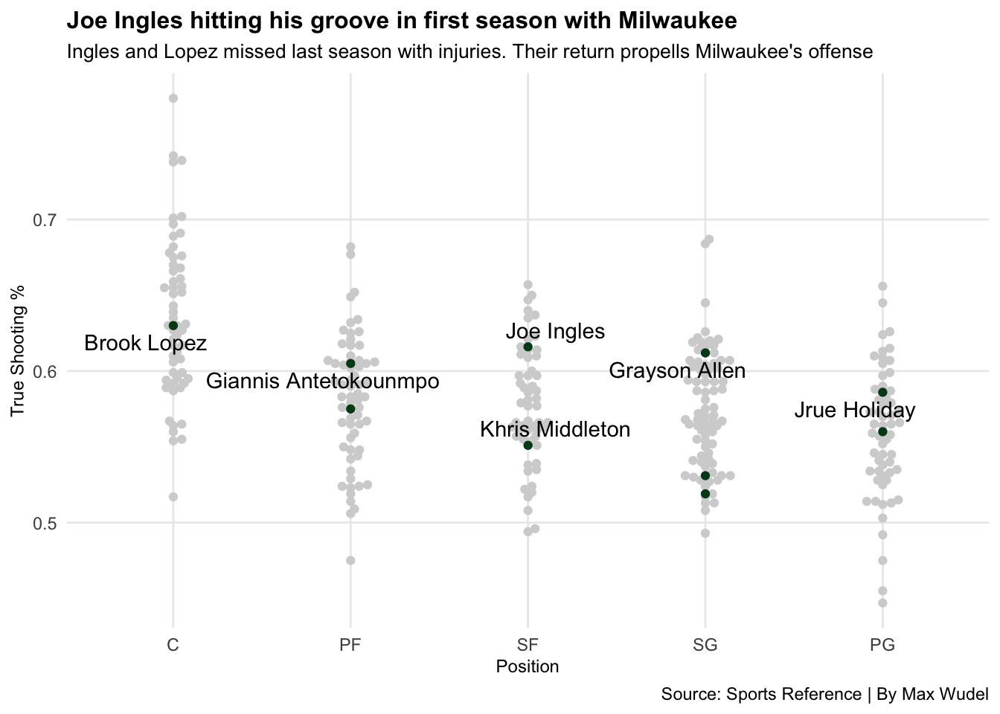
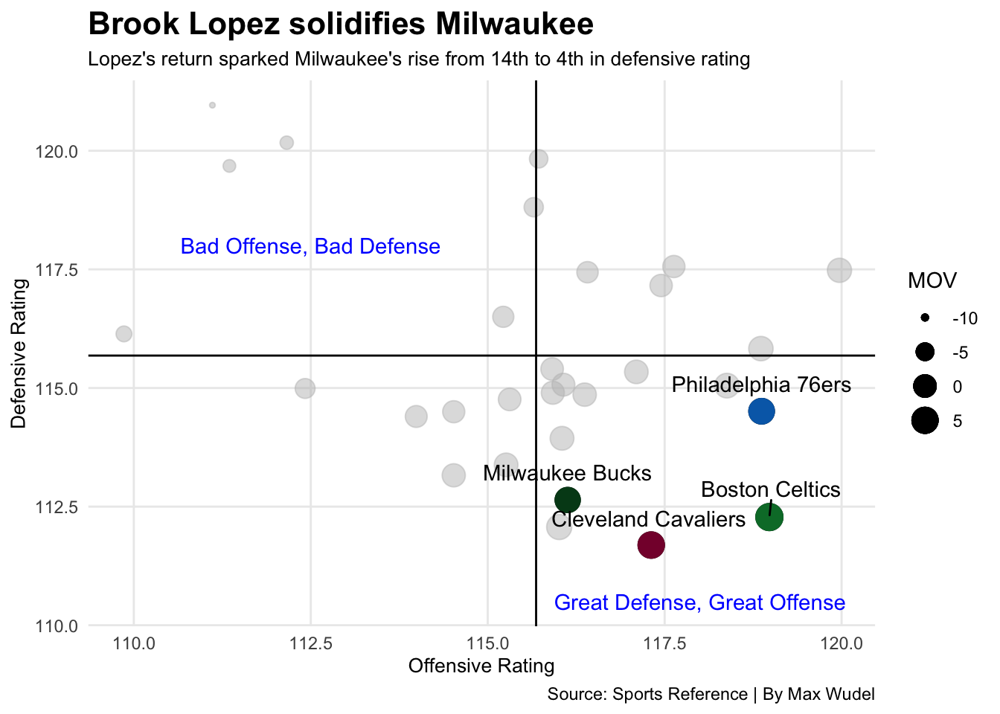

Can Milwaukee Win Their Second Championship in Three Years
milwaukee
nba
analysis
Author
Max Wudel
Published
April 16, 2023
With the NBA playoffs officially underway, let’s take a look at the team that finished at the top of the rankings, the Milwaukee Bucks. To cap off the 2020-2021 season, the Bucks ended their 50 year championship drought when they defeated the Phoenix Suns in six games. Giannis Antetokounmpo won Finals MVP and Milwaukee became a city of champions. Last year, the Bucks met the Boston Celtics in the Eastern Semifinals and were eliminated after the Celtics won game 7 in Boston.
Now its 2023 and Milwaukee finished with the best record in the NBA at 58-24 and secured the #1 seed in the Eastern Conference. They are slated to match up with the Miami Heat in the first round, the same team they played in the first round during their championship run two years ago. Their path to the finals wont be any easier this year as the Eastern Conference powerhouses wont go down without a fight. The Celtics finished just one game behind the Bucks and are considered favorites to win it all by many.
What separates this years Milwaukee team from last years? The first and most important factor for Milwaukee has been the return of big man Brook Lopez. Back surgery limited Lopez to just 13 games last season and his return has spearheaded Milwaukee’s defensive rise. Lopez finished this regular season as the league leader in blocks and has elevated his ability to defend outside of the paint. Joe Ingles, an off-season addition, has begun to prove his worth in Milwaukee as well. Ingles had been sidelined for a year following an ACL tear in January 2022 but the Australian native has hit hit groove. Heading into the playoffs, Lopez and Ingles are leading Milwaukee in True Shooting Percentage. True Shooting Percentage is a metric that takes into account efficiency of all shots, including free throws. Lets take a look at Milwaukee and how their shooting compares to the rest of the league.
Code
library(tidyverse)library(ggbeeswarm)library(ggrepel)library(gt)advanced <-read_csv("data/23Advanced.csv") %>%filter(MP >800) %>%mutate(Pos =factor(Pos,levels=c("C","PF","SF","SG","PG")))eastaverages <-read_csv("data/TeamAverages.csv") %>%filter(Team =="Milwaukee"| Team =="Boston"| Team =="Philadelphia"| Team =="New York"| Team =="Cleveland"| Team =="Miami"| Team =="Brooklyn"| Team =="Atlanta"| Team =="Chicago"| Team =="Toronto")ratings <-read_csv("data/TeamRatings.csv")bucks <- advanced %>%filter(Tm =="MIL")starters <- bucks %>%filter(Player =="Brook Lopez"| Player =="Giannis Antetokounmpo"| Player =="Jrue Holiday"| Player =="Khris Middleton"| Player =="Grayson Allen"| Player =="Joe Ingles")ggplot() +geom_beeswarm(data=advanced,groupOnX=TRUE, aes(x=Pos, y=`TS%`), color="lightgrey") +geom_beeswarm(data=bucks,groupOnX=TRUE, aes(x=Pos, y=`TS%`), color="#00471B") +geom_text_repel(data=starters, aes(x=Pos, y=`TS%`, label=Player)) +labs(x="Position", y="True Shooting %", title="Joe Ingles hitting his groove in first season with Milwaukee", subtitle="Ingles and Lopez missed last season with injuries. Their return propells Milwaukee's offense",caption="Source: Sports Reference | By Max Wudel" ) +theme_minimal()

When it comes to shooting, there are two Milwaukee standouts; Joe Ingles and Grayson Allen. Grayson Allen has molded into a starting role without the presence of Khris Middleton for most of the regular season. Middleton suffered a wrist injury in the first round of the 2021-2022 playoffs which kept him sidelined for all but 33 games.
Allen and Ingles both have true shooting percentages over 60% which cements them among the best at their respective positions. With Middleton back in the starting rotation, Allen has moved back to his bench role but continues to shoot well when called on. When buckets become tougher to find in the playoffs, consistent shooting can be the difference between a disappointing exit and a spot in the finals.
Leading Milwaukee in True Shooting Percentage is Brook Lopez. At 63%, Lopez’s true shooting percentage is average when compared to other centers in the league. Lopez attempted more three pointers than any other center in the league. With his ability to spread the floor its no wonder his TS% doesn’t stand out. Players like Nic Claxton and Rudy Gobert are taking over 70% of their shots within three feet of the rim. While Lopez is the most efficient scorer for Milwaukee, his presence is largely felt on the defensive end. Lets take a look at how Milwaukee’s offensive and defensive production compares to the rest of the league.
Code
ecfratings <- ratings %>%filter(Team =="Milwaukee Bucks"| Team =="Boston Celtics"| Team =="Philadelphia 76ers"| Team =="New York Knicks"| Team =="Cleveland Cavaliers"| Team =="Miami Heat"| Team =="Brooklyn Nets"| Team =="Atlanta Hawks"| Team =="Chicago Bulls"| Team =="Toronto Raptors") ecftop <- ecfratings %>%filter(Team =="Milwaukee Bucks"| Team =="Boston Celtics"| Team =="Philadelphia 76ers"| Team =="Cleveland Cavaliers")milwaukee <- ecftop %>%filter(Team =="Milwaukee Bucks")boston <- ecftop %>%filter(Team =="Boston Celtics")philly <- ecftop %>%filter(Team =="Philadelphia 76ers")cleveland <- ecftop %>%filter(Team =="Cleveland Cavaliers")ggplot() +geom_point(data=ratings, aes(x=ORtg, y=DRtg, size=MOV), color="grey", alpha=.5) +geom_point(data=ecftop,aes(x=ORtg, y=DRtg, size=MOV),color="black") +geom_point(data=milwaukee,aes(x=ORtg, y=DRtg, size=MOV),color="#00471B") +geom_point(data=boston,aes(x=ORtg, y=DRtg, size=MOV),color="#007A33") +geom_point(data=philly,aes(x=ORtg, y=DRtg, size=MOV),color="#006BB6") +geom_point(data=cleveland,aes(x=ORtg, y=DRtg, size=MOV),color="#860038") +geom_vline(xintercept =115.6837) +geom_hline(yintercept =115.6833) +geom_text_repel(data=ecftop, aes(x=ORtg, y=DRtg, label=Team),nudge_y = .58 ) +labs(title="Brook Lopez solidifies Milwaukee", subtitle="Lopez's return sparked Milwaukee's rise from 14th to 4th in defensive rating", caption="Source: Sports Reference | By Max Wudel",x="Offensive Rating",y="Defensive Rating") +geom_text(aes(x=112.5, y=118, label="Bad Offense, Bad Defense"), color="blue") +geom_text(aes(x=118, y=110.5, label="Great Defense, Great Offense"), color="blue") +guides(size =guide_legend(override.aes =list(color ="black"))) +theme_minimal() +theme(plot.title =element_text(size =16, face ="bold"),axis.title =element_text(size =8), plot.subtitle =element_text(size=10), panel.grid.minor =element_blank() )

Milwaukee finished thee 2021-2022 season ranked 14th in defensive rating. Since then, Lopez has returned to the starting lineup and fueled Milwaukee’s rise to fourth overall in team defense. At 34 years old, Lopez led the league in blocks totaling 193 across 78 games. Lopez’s ability to protect the paint allows his fellow teammates Giannis Antetokounmpo and Jrue Holiday to harass opponents in the open court knowing Lopez is there to help.
When Lopez began his tenure in Milwaukee in 2018, he transformed his play style to become a better three point shooter allowing him to stretch the floor offensively. Since his return from back surgery, Lopez has continued to elevate his game by becoming a more well-rounded defender. Lopez no longer solely patrols the paint. He has gained the ability to pick players up near the three-point line and understand where his teammates are to better defend shiftier guards. Lopez’s efforts have earned him a chance to win this years Defensive Player of the Year award as he is one of the three nominees.
With Brook Lopez solidifying Milwaukee’s defense and Ingles and Allen leading shooters in efficiency, lets take a look at how the Bucks team offense compares to the rest of the eastern conference playoff teams. To do this I have created a Z-Score. Z-Scores are a statistical measure of the distance from the mean. For this Z-Score I totaled field goal averages, rebounding averages and assist averages while subtracting turnover averages. A team with a score of zero is perfectly average. The larger the positive number gets from zero, the better that teams production is. Let’s take a look at the scores.
Code
teamzscores <- eastaverages %>%mutate(FGZscore =as.numeric(scale(`FG%`, center =TRUE, scale =TRUE)),RebZscore =as.numeric(scale(RPG, center =TRUE, scale =TRUE)),AstZscore =as.numeric(scale(APG, center =TRUE, scale =TRUE)),TovZscore =as.numeric(scale(TOV, center =TRUE, scale =TRUE)),TotalZscore = FGZscore + RebZscore + AstZscore - TovZscore ) %>%select(Team,FGZscore,RebZscore,AstZscore,TovZscore,TotalZscore)finalscores <- teamzscores %>%arrange(desc(TotalZscore)) %>%select(Team,TotalZscore)finalscores %>%gt() %>%tab_header(title ="Boston leads the Eastern Conference in Offensive Output",subtitle ="Boston's offense is like a microwave. It just keeps cooking." ) %>%tab_style(style =cell_text(color ="black", weight ="bold", align ="left"),locations =cells_title("title") ) %>%tab_style(style =cell_text(color ="black", align ="left"),locations =cells_title("subtitle") ) %>%tab_source_note(source_note =md("**By:** Max Wudel | **Source:** [Real GM](https://basketball.realgm.com/nba/team-stats/2023/Averages/Team_Totals/Regular_Season)") ) %>%fmt_number(columns = TotalZscore, decimals =2 ) %>%tab_style(locations =cells_column_labels(columns =everything()),style =list(cell_borders(sides ="bottom", weight =px(3)),cell_text(weight ="bold", size=12) ) ) %>%tab_style(style =list(cell_fill(color ="#00471B"),cell_text(color ="#EEE1C6") ),locations =cells_body(rows = Team =="Milwaukee") )
Boston leads the Eastern Conference in Offensive Output
Boston's offense is like a microwave. It just keeps cooking.
Milwaukee finishes third among other eastern conference teams when looking at team offensive production. When compared to Boston, their rating seems exceptionally low but this is because only four bucks played 70 or more games during the regular season. Bucks head coach Mike Budenholzer spent much of the regular season testing new lineups and gave star players the rest that they much deserved.
Despite this, Milwaukee still finished with a score of .67 which is well above the rest of the Eastern Conference playoff teams. The standout here is the Atlanta Hawks. They finish as the seven seed in the eastern conference and have not been in the eyes of those predicting champions. Unfortunately for them, they have to play the Boston Celtics in the first round who hold the score for most exceptional offense in the Eastern Conference.
During Khris Middleton’s absence, Jrue Holiday has adapted a larger role for Milwaukee’s offense and his production has soared because of it. With Middleton returning to the starting lineup, Holiday will be able to focus more on his defensive prowess. The same goes for Bobby Portis. He adapted a starting role last year with Lopez sidelined with a back injury and has since returned to the bench. Portis’s increased production has translated to his role on the bench as he is now one of the three nominees for Sixth Man of the Year.
Milwaukee’s run to the finals will be nothing short of difficult. Boston, Philadelphia and Cleveland have cemented themselves as powerhouses this season. Boston holds the best offense in the eastern conference and Cleveland boasts the best defense in the NBA. Philadelphia has the MVP front runner in Joel Embiid and a hunger to reach the Eastern Conference Finals.
To even make an appearance in the Finals, Milwaukee is going to have to increase the efficiency of their shooting. Jrue Holiday and Khris Middleton will need be there when Antetokounmpo passes it out to them. Defense has not been the issue for Milwaukee this season as they finished fourth in the league in defensive rating. Milwaukee will have to dominate the board and in transition if they want to win their third total championship